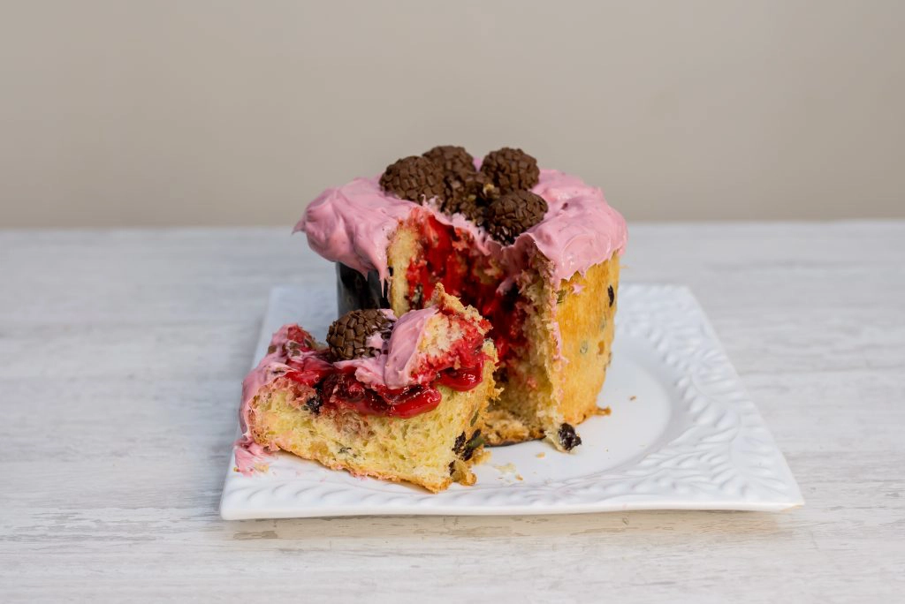
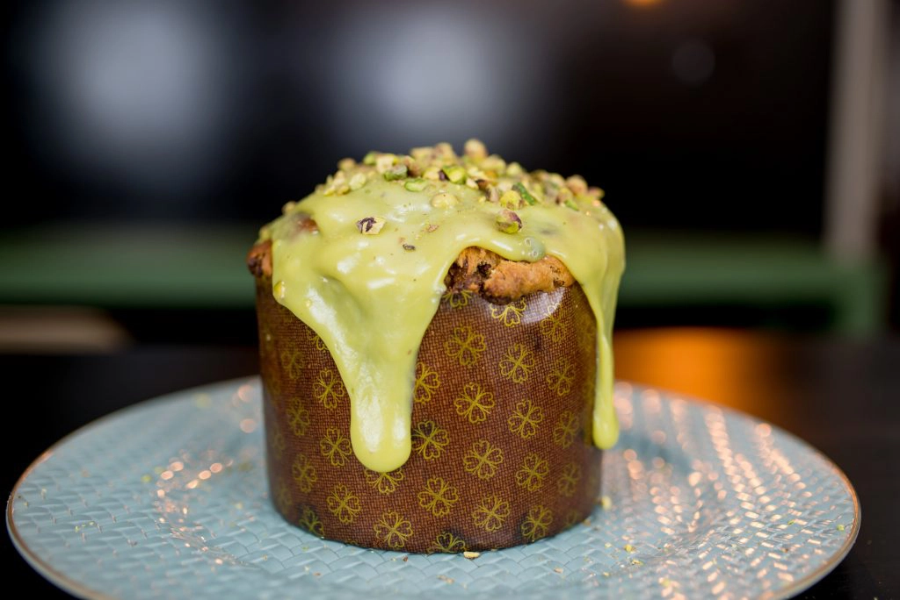
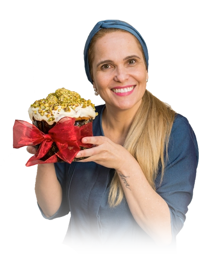

Para participar do curso gratuito clique no botão abaixo
As aulas serão enviadas dentro de um grupo no WhatsApp. Ao entrar
aguarde no grupo
Aprenda o passo a passo dos Panetones que são tendências no momento com aulas e receitas inéditas
Além de te ensinar essas e mais receitas, ainda vou te ensinar a precificar e
embalar de forma correta prontos para vender!




Já se imaginou fazendo Panetones como esses?
Descubra os SEGREDOS e técnicas para fazer Panetones Perfeitos e saiba como valorizar os seus produtos, mesmo
que você ainda não tenha experiência!
Inscreva-se Agora, clique no botão abaixo
COMO FAZER PARA PARTICIPAR?
Para participar do Curso você precisa entrar em nosso Grupo Vip no Whatsapp. Por lá, você irá receber todas as
aulas e também vai poder tirar suas dúvidas durante o curso.
Para acessar o grupo agora, basta clicar em “QUERO PARTICIPAR”
As aulas serão enviadas dentro de um grupo no WhatsApp e terão inicio dia 31 De Outubro, segunda-feira, ao
entrar aguarde no grupo
Autora Do Curso Gratuito

Me chamo Isis Alvarez, tenho 43 anos, sou mãe, esposa, confeiteira há 20 Anos e Instrutora de Cursos Online com
mais de 30.000 alunas em todo o Brasil e Mundo.
E nesse curso gratuito irei te ensinar absolutamente TUDO sobre os Panetones mais vendidos que todo mundo Ama e
compra muito!!
Participe você também, aprenda a fazer Panetones Saborosos e inicie através de minha
metodologia aprovada
por milhares de alunas em um conteúdo totalmente
online e gratuito.
CORRA E GARANTA SUA VAGA, PODE ACABAR A QUALQUER MOMENTO!